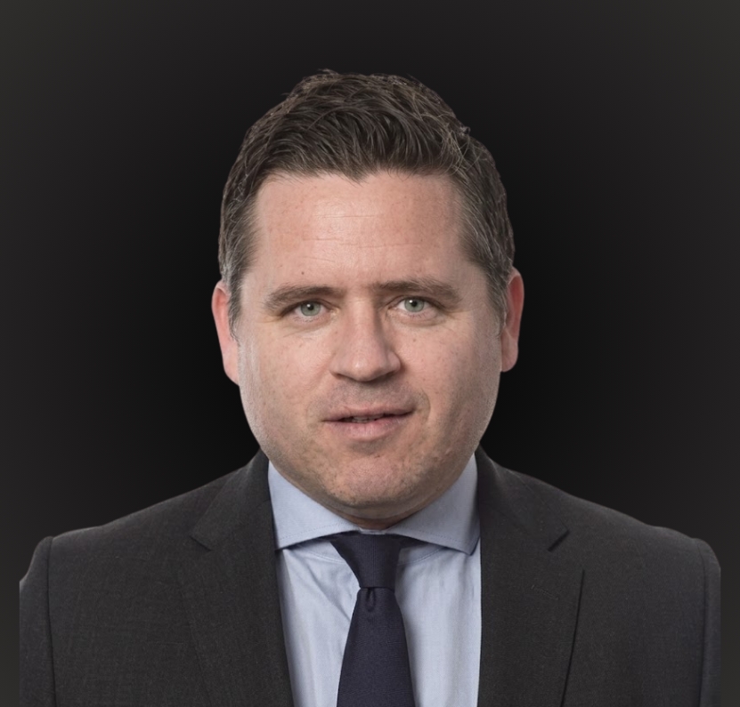

A live, expert-led program that brings your whole institution up to speed on tokenization, settlement, and supervision, grounded in Canadian regulation and how your bank actually operates. Built by the team developing 4orm Finance.
Every week, a working expert teaches live and takes your institution's questions in real time. Here's what's on this week.

How Canadian regulators classify digital assets, and how to structure an offering to stay onside.
Led by Michael Stevens, Partner, Emerging Technology, Fasken · 60 min · Live + Q&A
A predictable weekly rhythm your whole institution can plan around. Built with Canadian regulators, securities lawyers, capital-markets advisors, and bank compliance teams.
Michael Stevens · Fasken
Settlement specialist
Forensics & compliance lead
KCS research desk
Submit a real institutional question and get a real answer. The thing no course offers.
Tokenize an asset, run a compliance check, walk an AML scenario. Learn by doing.
Decades of research point the same way: people finish, retain, and apply far more when learning is live, social, and hands-on.
A shared timeline and a real group turn intentions into finished programs.
Hands-on practice is the strongest path to retention, up to ~90%.*
Adults learn best when it's relevant to their work and tied to your real context.
Spaced reinforcement and active recall: the most evidence-backed methods.
From the branch floor to the boardroom, your people describe digital assets, tokenization, and risk the same way.
An auditable training record per seat: the trail you can point regulators and auditors to.
Leadership leaves able to make build-vs-partner and risk-appetite calls with confidence.
Bank & FI staff, from branch frontline to the leadership table.
Tokenization issuers & operators getting compliant and bankable.
The people teaching are the same people building, regulating, and advising on this market in Canada. Not pre-recorded lectures, not generic instructors.
Partner, Emerging Technology
Fasken
Michael leads the Emerging Technology practice at Fasken, advising Canadian banks, issuers and infrastructure providers on the regulatory pathway for tokenized assets, digital securities, and the CSA exempt-market regime. He has worked through every meaningful Canadian precedent in the space, including the NFT-as-new-asset-class question. In Academy sessions he teaches the legal frame, walks through CSA structuring options, and takes live questions from your CAMLO, GC, and capital-markets desk.
Qualified Canadian trust co. operators
How Canadian custody actually works for tokenized real-world assets, the mechanics behind segregated accounts, attestation, and qualified-custodian eligibility.
AML, blockchain forensics, supervisory specialists
How supervisors actually see (and don't see) tokenized flows, what FINTRAC expects, how blockchain forensics is used in Canadian investigations.
Short, working-expert teaching plus open Q&A, the cadence that builds habit and completion. 2-3 sessions per week per module.
Each module ends in the 4orm sandbox: tokenize an asset, run a compliance check, walk an AML scenario. The thing the lectures point at, in your hands.
An auditable competency record per seat your compliance team can rely on. CE credits where applicable.*
Canadian banks, credit unions, and tokenization issuers / projects. Roles from compliance and risk to capital markets and leadership.
Live, with replays. Live sessions are the spine because that's what produces completion (85-95% vs 3-15% for video-only).
Yes, auditable per seat with CE credits where applicable. Designed so your compliance team can point regulators at it.
Yes. Built around CSA, OSFI, CIRO, FINTRAC, Bank of Canada, PCMLTFA and the Stablecoin Framework. Not warmed-over U.S. material.
Yes, for the institution track. Sessions adapt to your institution's size, risk appetite, and operating model, and Q&A is live.
Working experts (Michael Stevens / Fasken on legal, custody and supervisory specialists, the 4orm team on settlement) plus the KCS research desk for the weekly market briefing.
*CE credits where applicable. Stats on adult-learning completion are from established adult-learning research; specific course outcomes will vary by cohort and institution.
Get the curriculum, pricing, and the next live session calendar. We'll walk it through with you in 25 minutes.
Book a demo →You've just walked the same flow your treasury team, risk lead, and compliance officer would walk in production. If it fits the way your institution moves, we'd like to talk. Pre-Seed closes Q2 2026.